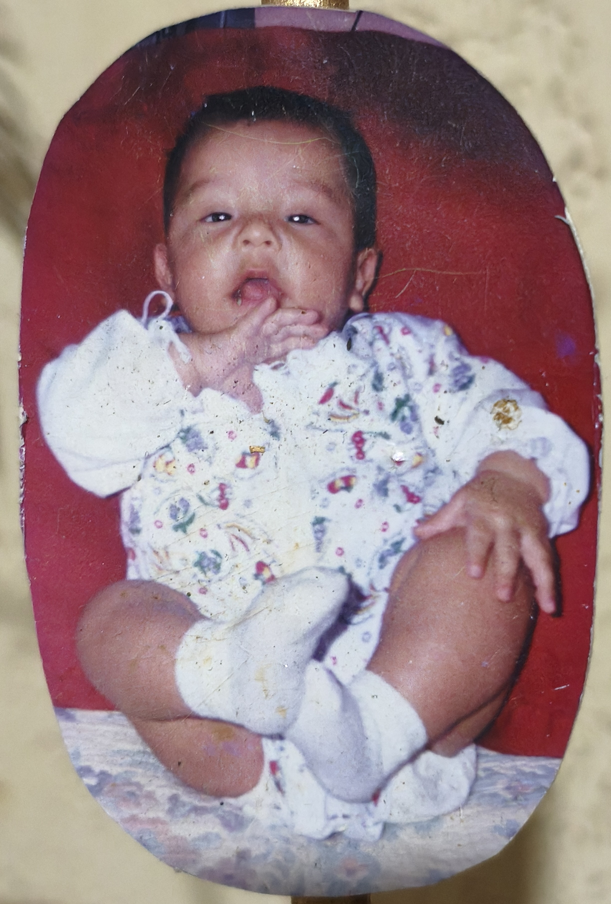
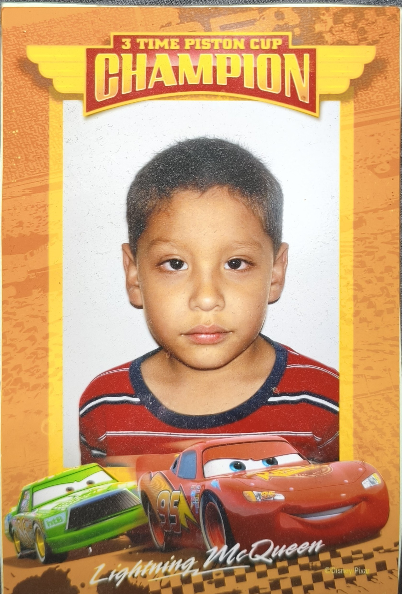
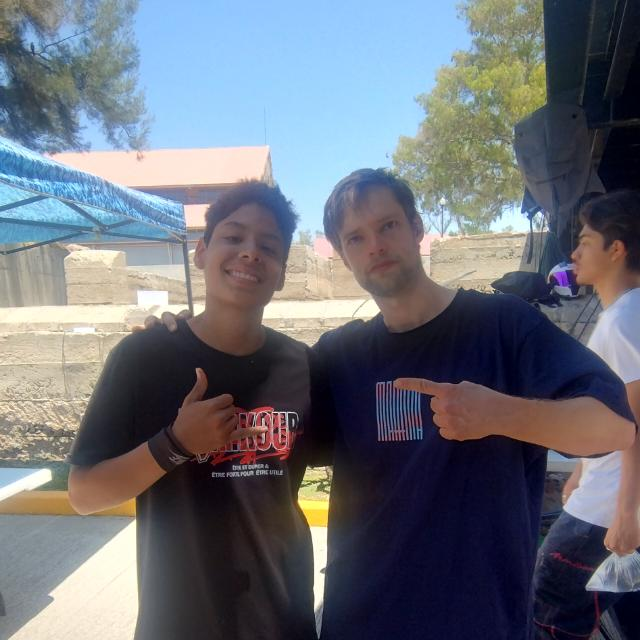
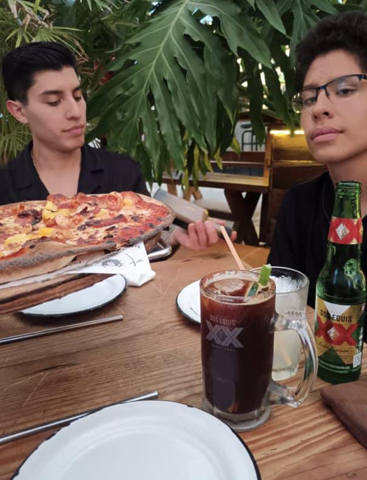
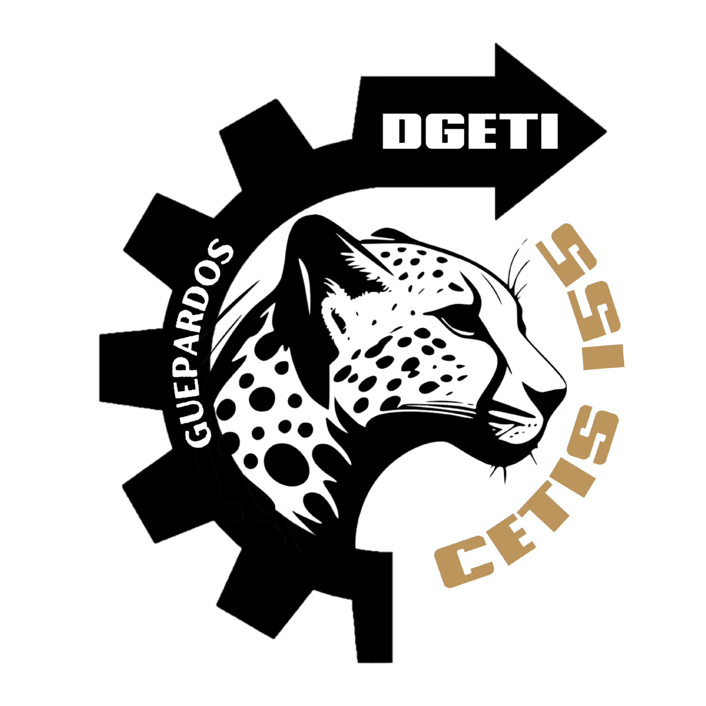

este es bebe David,me tomaron esta foto a los 4 meses de nacido

Etiqueta de mis actividades favoritas
Tocar rock o metal
Aprender programacion y estudiar
Hacer ejercicio
Pasear a mis perros
Lista de alumnos 5to A
Jhonatan Alberto
Jaziel Duron
Alicia Fernanda Tapia
Ivanna Santos
Ahora crearemos una tabla:
Curso
Horario
Num. Horas:
Python
12:00 am - 2:00 pm
60
Bases de datos
8:00 am - 11:00 am
50
HTML
7:00 am - 8:00 am/11:00 am - 12:00 am
40
Ejemplo de un formulario sencillo
escribe tu nombre completo:
Escribe tu clave:
Puestos de trabajo buscados:
Gerente
Tecnico
Empleado
Selecciona tu sexo
HOMBRE
MUJER
Selecciona el fichero y adjuntalo:
Aqui tenia 6 años y me tomaron esta foto al entrar al kinder

Aca tenia 15 años,no tango fotos de la secundaria ya que no me gustaba tomerme fotos,en la foto tenia como 6 meses haciendo parkour y ahora llevo 2 años practicandolo,

Quien esta al lado de mi es Mathias Mayers o Matttma en su canal de youtube,tambien he conocido a verios extranjeros en el ultimo año y todos son muy hamables y hospitalarios
esta ha sido la ultima foto que me he tomado,fue cuando cumpli 17 años,el de al lado es mi hermano Luis que tiene 28 años se acaba de casar hace un mes y va a se papa,fui a varios restaurantes y a un concierto de Nu Metal con mi papa y un amigo mio llamado Levy

Algunas de las bandas que tocaron interpretaciones
Angel Engine
Korn
Slipknot
Rammstein
Nirvana
Mi papa me enseño a trabajar en mi mismo y mejorar constantemente y lo aprecio mucho a mi viejo
Celebramos mucho el dia de mi cumpleaños que es el 2 de septiembre,lo ulrimo que hicimos es ir a un balneario que me diverti bastante ademas de que el sigiente domingo planeamos ir al cristo roto con nuestras motocicletas
Levantarme,tender mi cama y alistarme para la prepa
Al salir de la prepa hago mi tarea y avanzar mi pag web
Almuerzo,juego un rato o voy a hacer ejercicio
Saco a pasear a mis perros
Escucho musica o alguna pelicula antes de dormir
Me preparo para mañana guardando libretas y cosas que necesite
Los Videojuegos que mas me gustan
Left 4 Dead 2
Doom Eternal
Dead Space
Undertale
Manhunt 2
Toda la saga de Assassins creed
God of War
Minecraft
The Farmer Got Replaced
Monaco
Siempre me ha gustado la programacion desde que tengo conciencia,tambien la electronica y mecatronica pero ahora estoy solo en programacion, ya he hecho varios proyectos personales y de tareas y me siento comodo en esta especialidad,quisiera dedicarme a esto a menos que la ia remplace a todo un equipo de produccion
Se varios lenguajes de programacion ninguno a la perfeccion pero conozco su sintaxis y lo que hacen
Python
MySQL
MongoDB
MariaDB
PostgreSQL
Java/JavaScript
Kotlin
Arduino (Uno)
Netbeans
PHP
Bash
Uso linux 🐧
Git y github
los README.md de github
Todo empezo imprimiendo "Hola Mundo!" en psint
Formulario para inscripcion al cetis 155

Escribe tu nombre:
Escribe tu edad:
Selecciona tu especialidad (Solo una):
Programacion
Automotriz
Recursos Humanos
Tecnico en computadoras
Selecciona tu genero:
Hombre
Mujer
Elige tu turno de estudio:
Matutino
Vespertino
Señala tu nivel de estudio
KinderGarten
Primaria
Secundaria
Si ya habias estado en un bachillerato antes ingresa tu guardando
Ingresa donde nos conociste:
Redes sociales
Familiares
Amigos
Internet
Otro medio
/// Si fue por otro medio escribelo aca